📌 Upute za vanjske suradnike
Prilikom prvog angažmana vanjski suradnici dostavljaju pročelnicima:
📌 Ime i prezime
📌 OIB
📌 Kontakt telefon/email
OIB je nužan za unos u ISVU i kreiranje AAI identiteta (pmfst email za pristup svim sustavima). Kontakt telefon i privatni email su važni radi komunikacije s pročelnicima prije nego što se otvori službena pmfst email adresa.
AAI@EduHr predstavlja sustav za elektroničku identifikaciju korisnika i pristup fakultetskim i znanstvenim digitalnim resursima.
Pri angažiranju vanjskih suradnika na fakultetu, nastavnicima se dodjeljuje elektronički identitet (AAI korisničko ime i lozinka) koji mogu koristiti za pristup različitim fakultetskim uslugama.
Elektronički identitet ima oblik elektroničke adrese u obliku korisnicko_ime@pmfst.hr. Koristi se za:
✅ Službenu komunikaciju vanjskih suradnika s administracijom i studentima putem e-pošte.
✅ Prijavu na sustave za eučenje (elearning, merlin i sl.).
✅ Unos podataka za izradu ugovora u sustavu Sceduly (https://sceduly.com/hr/).
✅ Evidenciju održane nastave u sustavu Sceduly.
Korisničke podatke za AAI izrađuje voditelj računskog centra ili kadrovska.
Za pristup e-pošti PMF-a, potrebno se prijaviti s AAI korisničkim podacima putem poveznice:
Za izradu ugovora, vanjski suradnici moraju unijeti podatke u sustav Sceduly (https://sceduly.com/hr/).
Klik na Profil / Podaci:
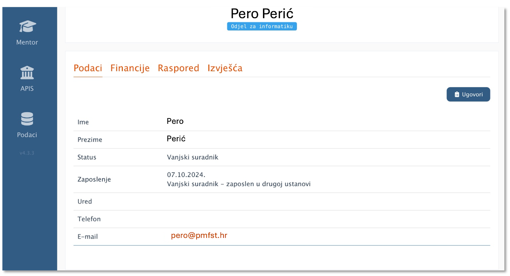
Podatke za ugovor unosite klikom na Ugovori:
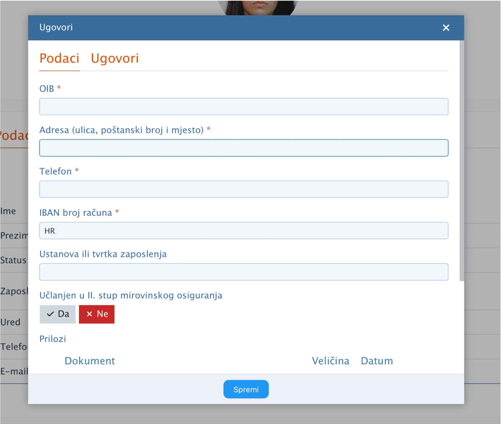
Osim općih podataka potrebno je dodati i poreznu karticu:
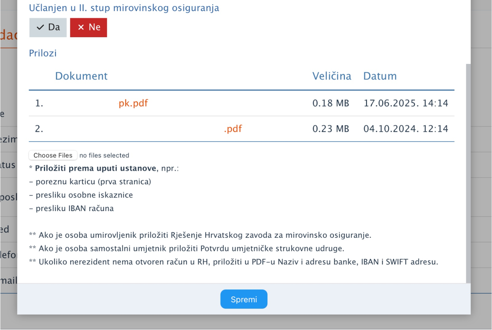
Evidencija nastave karticom se obavlja u nekoliko koraka:
Nastavnik koji trenutno nema karticu može evidentirati nastavu u Sceduly-ju. Također, ako student trenutno nema karticu, nastavnik ga može evidentirati u Sceduly-ju.
Na stranici https://sceduly.com/hr/ prijavljujete se pomoću AAI korisničih podataka. Klikom na Profil i karticu Raspored, imate uvid u svoj raspored.
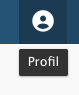
Termin koji nije evidentiran (ili nije održan) prikazan je s oznakom +.
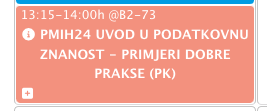
Ako je termin održan, a nije evidentiran karticom, klikom na termin, otvorit će se poseban prozor za uvid u postavke termina te evidenciju studenata. Nakon toga će termin izgledati ovako:
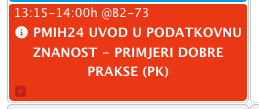
Ako je termin održan i evidentiran karticom, bit će prikazan na sljedeći način:
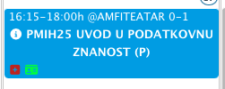
Na slici možete primijetiti malu zelenu oznaku kartice. Klikom na taj termin, prikazuje se prozor s informacijama o održanoj nastavi:
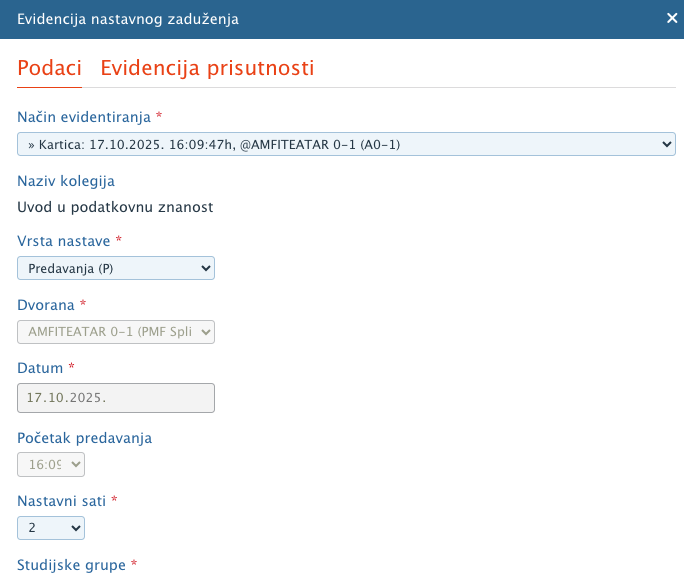
Na dnu prozora, nalaze se opcije za potpisivanje i brisanje evidencije.
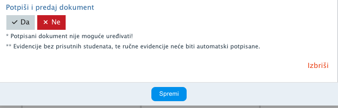
Ako je nastava održana i evidentirana karticom, možete kliknuti na Da i Spremi te na taj način "Potpisati" dokument. Nakon potpisivanja - više nije moguće uređivati termin. Evidencija studenata se može uređivati.
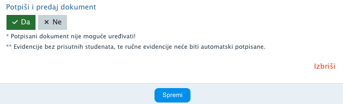
Termin će izgledati ovako:
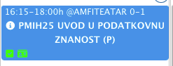
Ako ste pogriješili prilikom potpisivanja, prodekan za nastavu ima ovlasti otključati evidenciju.
Ako nastava nije održana u tom terminu već ste greškom kliknuli, onda možete kliknuti na Izbriši.
Ako nemate karticu, nastava se može evidentirati i ručno klikom na odgovarajući termin:
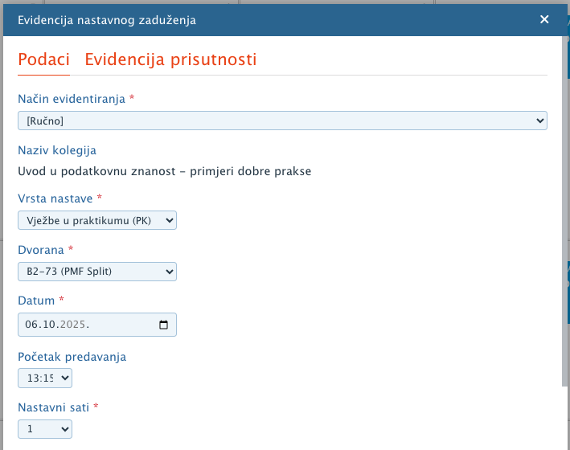
Na kartici "Podaci" provjeravate informacije o održanoj nastavi. Na kartici "Evidencija prisutnosti" provjeravate evidentirane studente. Ako student nema svoju karticu, može se dodati u evidenciju.
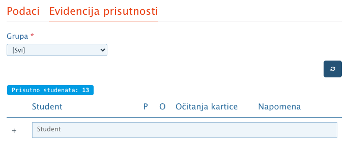
U Sceduly-ju, klikom na Izvješća na profilu možete preuzeti svoja Izvješća o realiziranim nastavnim zaduženjima.
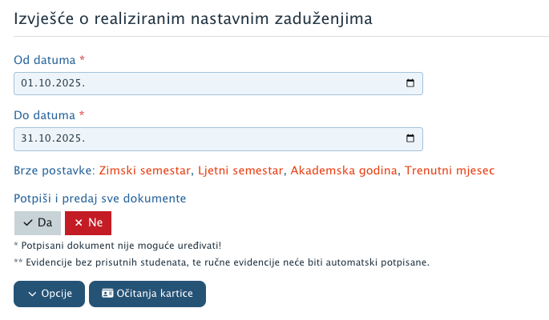
Nastava se može potpisivati svaki put neposredno nakon što je održana ili naknadno te termin po termin ili odjednom. Preporuka je da nastavu odmah potpišete nakon što je održana, no ako ipak to nije bilo moguće, onda se može potpisati automatski odjednom klikom na Da te Opcije i Potpiši i predaj sve dokumente.
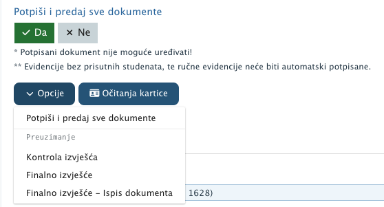
Klikom na Opcije - Kontrola izvješća možete vidjeti koji termini su potpisani, a koji nisu:
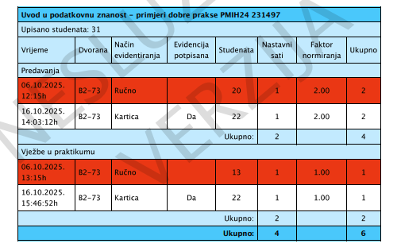
🖊️ Potrošni materijal za potrebe nastave, npr. flomasteri za bijelu ploču, krede i sl. preuzimaju se na porti.
🔑 Ključevi od učionica preuzimaju se na porti.
U izradi...